11 November 2026 · Unapproved candidates. Images are unretouched review copies. Click an image to inspect it separately.
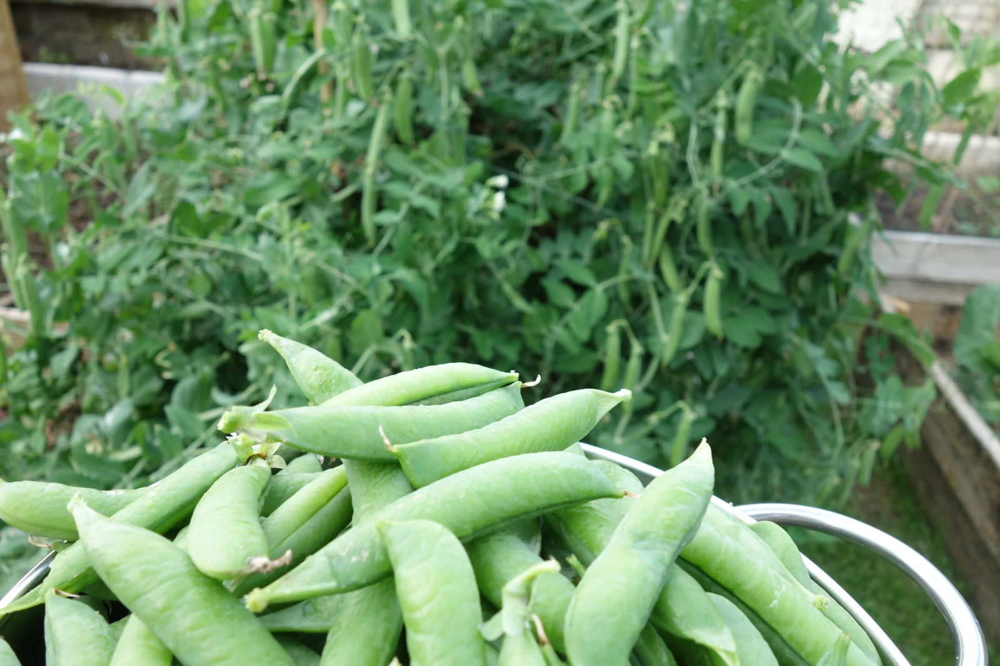
L029 — Peas, just picked
A clear foreground harvest, with the living crop behind it. The strongest link between growing and eating.
Limitation: Mostly green; very close peas are soft. The top is textured, so a separate cream title area would be safer than lettering directly on the foliage.
5472 × 3648 px
Original source
/Volumes/Videos/Movies/DJI Videos/Photographs/Allotment/DSC06620.jpeg
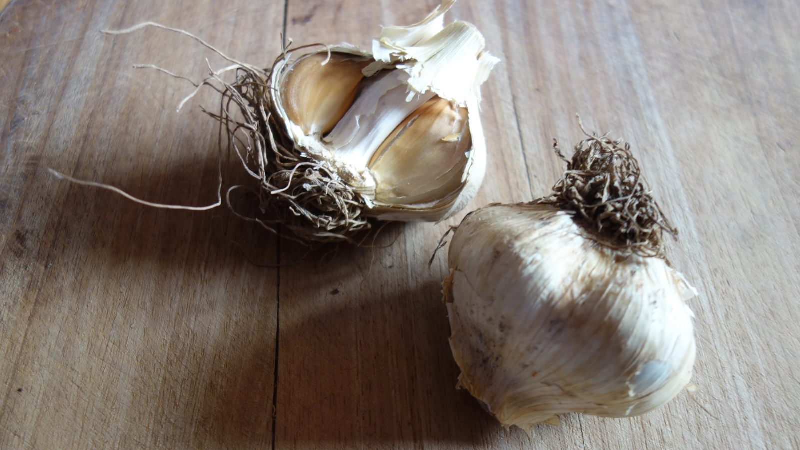
L037 — Elephant garlic on wood
Quiet colour, tactile skins and simple arrangement. The most restrained still-life direction.
Limitation: The nearest bulb is soft and the image can read as a cookery book. A vertical crop must preserve both bulbs; test a framed landscape treatment first.
5472 × 3080 px
Original source
/Volumes/Videos/Movies/DJI Videos/Photographs/Allotment/DSC09815.jpeg
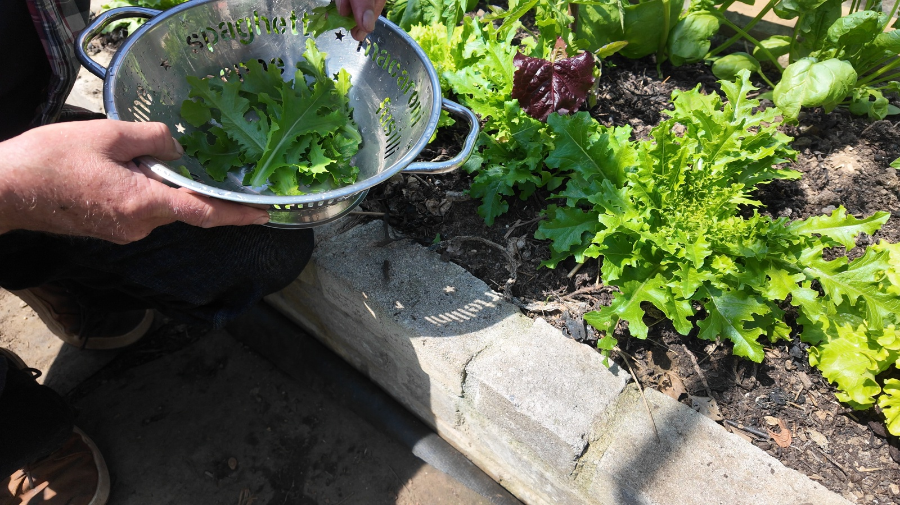
L575 — Picking salad leaves
Hands, fresh leaves and the colander make the activity immediately understandable.
Limitation: Hard sun, pale paving and deep shadow occupy much of the image. Prefer an image panel; a full-height portrait crop would lose useful context.
3840 × 2160 px · 8.000s
Original source
/Volumes/five_backup/Videos backup 11 May 2026/Movies/May 2026/May Meal From My Garden/DJI_20260510115152_0140_D.MP4
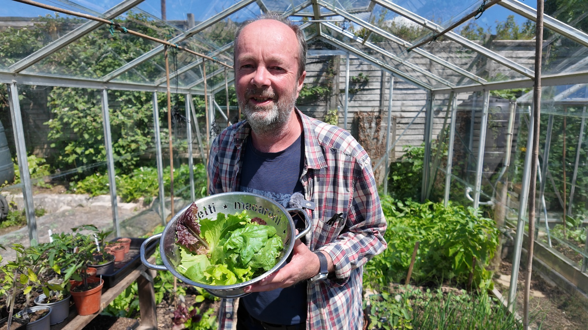
L573 — Showing the salad harvest
An engaging grower-with-harvest scene, with eyes open at this exact frame.
Limitation: Mid-speech expression, bright sun and greenhouse bars. Stronger for the back or supporting literature than an uncluttered front.
3840 × 2160 px · 125.000s
Original source
/Volumes/five_backup/Videos backup 11 May 2026/Movies/May 2026/May Meal From My Garden/DJI_20260510114410_0138_D.MP4
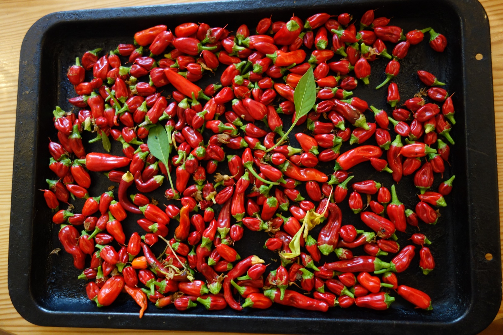
N06727 — A tray of red chillies
Strong red/green contrast and an abundant, repeatable pattern. Newly found on NODE NAME.
Limitation: One crop dominates; the baking tray suggests the kitchen. Could work as a tightly framed photographic panel, with quiet typography outside it.
5472 × 3648 px
Original source
/Volumes/NODE NAME/Photos from Laptop/DSC09635 (1).JPG
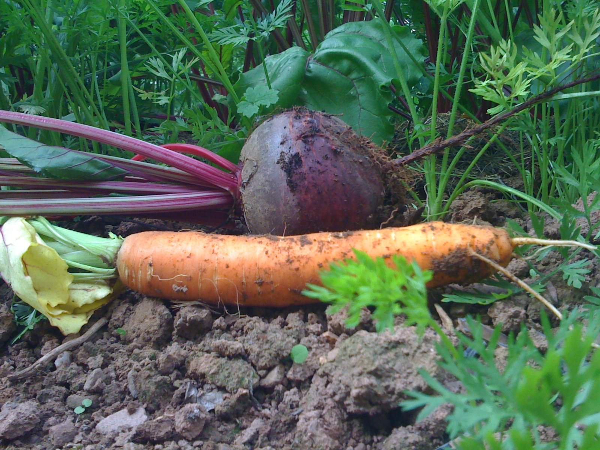
N07251 — Carrot and beetroot in the soil
Two unmistakable vegetables, soil still attached, with growing foliage behind. The most direct new harvest composition.
Limitation: Only 1600 x 1200 pixels. Good for a smaller panel; unsuitable as a finely detailed full-height cover at this trim without accepting low resolution.
1600 × 1200 px
Original source
/Volumes/NODE NAME/Photos from Laptop/IMG_0522.JPG
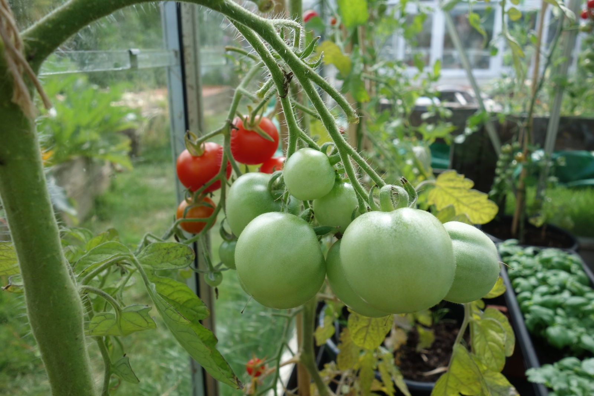
L033 — Tomatoes on the vine
Recognisable fruit and a clear sense of growth; red fruit behind green adds depth.
Limitation: Foreground fruit is not ripe, and greenhouse structure competes. Focal detail is softer than the pixel count suggests.
5472 × 3648 px
Original source
/Volumes/Videos/Movies/DJI Videos/Photographs/Allotment/DSC08515.jpeg
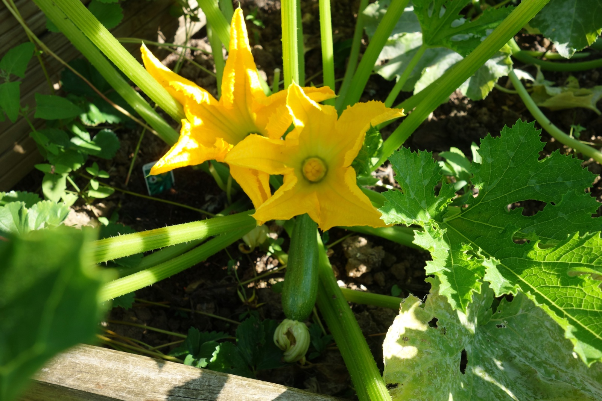
L031 — Courgette and flower
A bright yellow focal point against green foliage; clearly a growing plant.
Limitation: Strong sunshine clips some detail; surrounding stems and damaged leaves are busy. A single crop does not convey the breadth of the book.
5472 × 3648 px
Original source
/Volumes/Videos/Movies/DJI Videos/Photographs/Allotment/DSC08469.jpeg
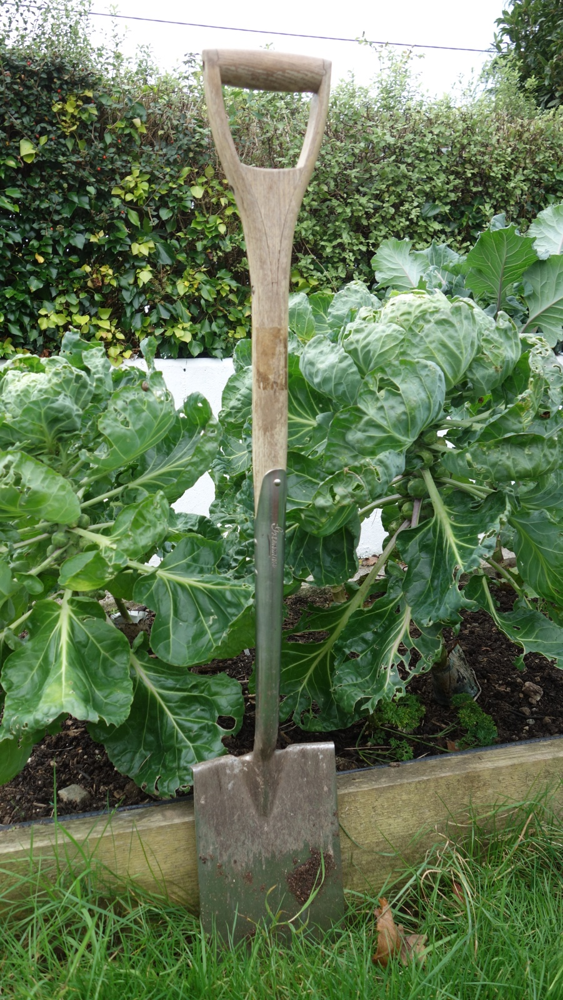
N04068 — Spade beside brassicas
An inherently vertical gardening image, with a simple recognisable tool.
Limitation: Bright sky, hedge and worn leaves compete. Better as a contextual detail than the main promise of a vegetable guide.
3080 × 5472 px
Original source
/Volumes/NODE NAME/Photos from Laptop/DSC02431.JPG
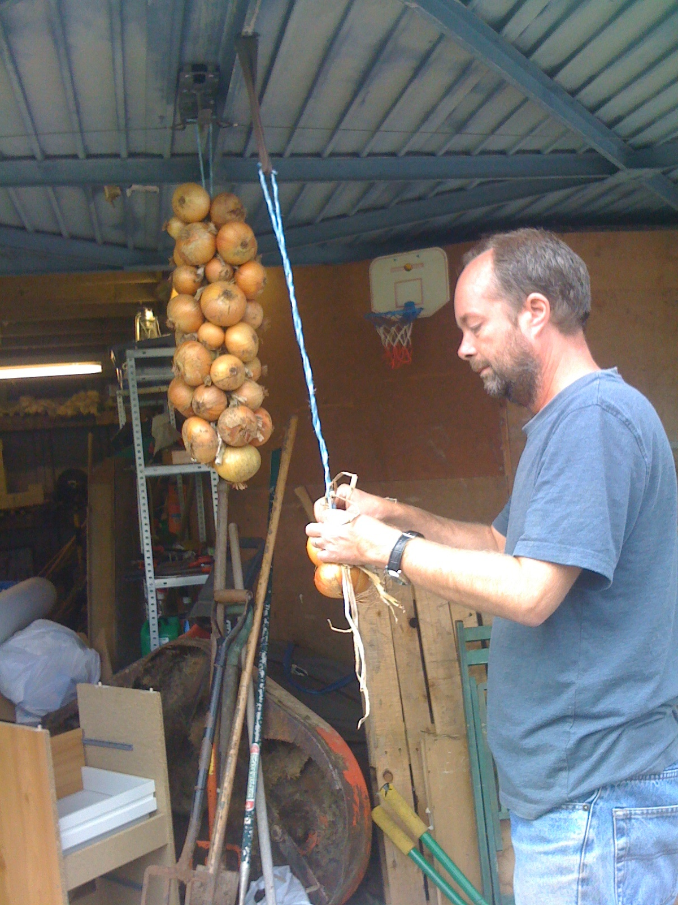
N07297 — Stringing onions
An authentic practical scene with stored produce and a naturally vertical composition.
Limitation: Older image (file EXIF: 2013), only 1200 x 1600. Useful for personal history or a small supporting portrait, subject to John confirming its use.
1200 × 1600 px
Original source
/Volumes/NODE NAME/Photos from Laptop/IMG_0653.JPG
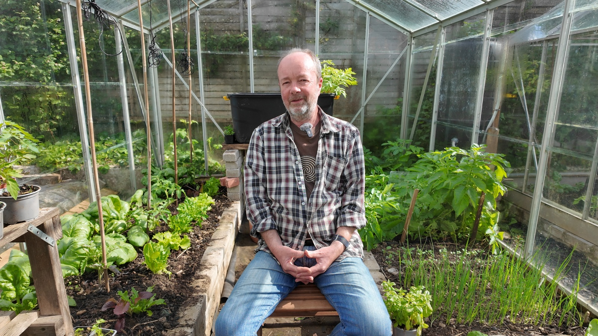
L561 — Seated in the greenhouse
Calmer posture with crops on either side; a useful contemporary author-image alternative.
Limitation: Some squinting, hard highlights and a dark tub behind the head. Needs a deliberate crop.
3840 × 2160 px · 71.098s
Original source
/Volumes/five_backup/Videos backup 11 May 2026/Movies/May 2026/El nino/DJI_20260504090936_0109_D.MP4
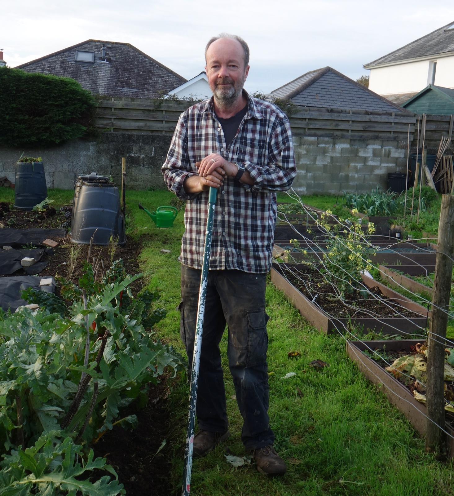
L111 — At the plot with a spade
A full-length photograph with a relaxed pose; higher-resolution source for a possible author treatment.
Limitation: Face is shaded and houses dominate the background. A closer crop would be more useful than the entire scene.
3080 × 3363 px
Original source
/Volumes/Videos/Movies/DJI Videos/Photographs/me-at-the-allotment/DSC09737.jpeg